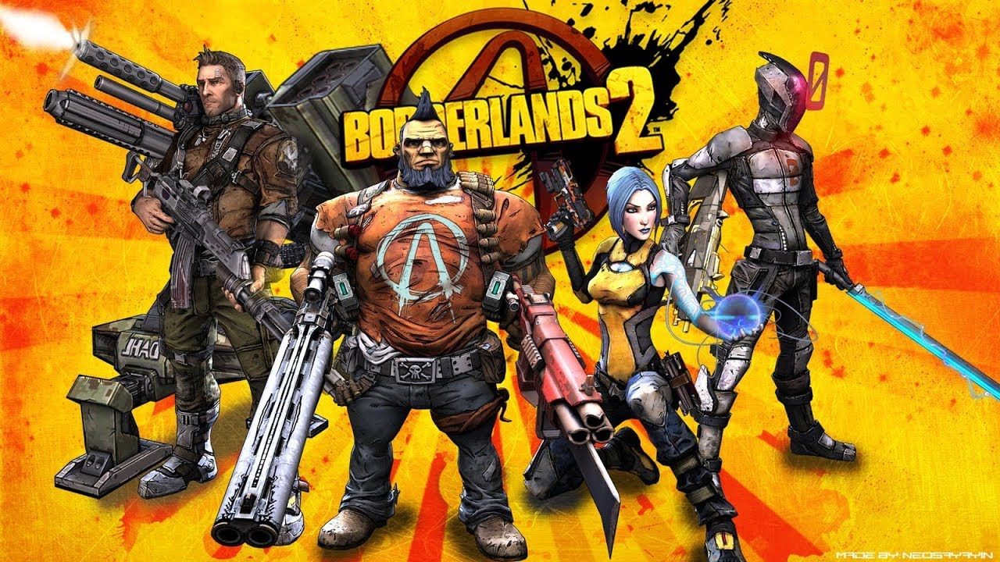

Borderlands 2

Сюжет
С момента событий Borderlands, в которой игроки открыли секреты Хранилища, прошло 5 лет. Персонаж по прозвищу Красавчик Джек (англ. Handsome Jack), антагонист игры, присвоил себе заслуги Искателей Хранилища, получил контроль над корпорацией «Гиперион» и объявил себя Диктатором Пандоры, взяв на себя ответственность за уничтожение Разрушителя (англ. Destroyer). Обещав очистить планету от беззакония, Красавчик Джек начал кампанию по индустриализации планеты и уничтожению существующего населения колонистов. Главный символ правления Красавчика Джека — огромная база снабжения в виде буквы Н на орбите Пандоры, Гелиос. База всегда видима и может доставить силы «Гипериона» в любую точку планеты. Задача новой команды Искателей Хранилища — ликвидация Джека и возвращение мира на Пандору.
Borderlands 2 начинается с момента, когда четверо главных героев — по совместительству Искатели Хранилища (англ. Vault Hunters) — выживают при крушении на поезде во льдах Пандоры. Крушение организовано Красавчиком Джеком, который не желает видеть на планете конкурентов. Избранного игроком героя отыскивает робот по имени Железяка (англ. Claptrap). После того, как тот поведает игроку о себе и даст эхо-интерфейс, появляется сообщение от загадочного Ангела-Хранителя, которая сообщит, что игрок должен следовать за роботом, дабы тот помог ему избавить Пандору от тирании корпорации.
Когда Искатели добираются до Убежища, с ними связывается Роланд — бывший Искатель, ныне — лидер антигиперионского общества «Алые Налётчики», собранной из бывших бойцов «Алого Копья», и просит найти энергоблок для щитов города, который находился у капрала Райса. Связь с ним пропала. Они находят смертельно раненого Райса, но блок унесли психи. После нахождения блока Роланд говорит с ними, но на него нападают, и связь прерывается. Войдя в город, Искатели знакомятся с механиком Скутером. Он сказал, что ему нужна помощь в исполнении Плана Б, по которому Убежище должно взлететь, но не получилось. Искатели идут к Роланду домой и из ЭХО в его сейфе узнают, что некто Огненный Ястреб назначил им встречу в его логове, в Ущелье Отмороженных. Оказывается, что Ястреб — это Лилит, подруга Роланда и бывший Искатель. После битвы с кланом Кровомесов она говорит, что Роланд в Крепости Кровомесов. Искатели следуют туда, но бандиты атакуют их. Скутер поясняет, что нужен грузовик бандитов, чтобы они приняли ребят за своих. Команда добывает грузовик у сестры Скутера Элли, обосновавшийся в Песках. Попутно убив стражника ворот и забрав у него ключ, Искатели заходят в Крепость. Там они находят Роланда, но его уносит гиперионский робот-строитель. Искателю предстоит спасти Роланда, после чего он даёт задание: остановить поезд «Гипериона» и украсть ключ от Хранилища. В локации «Тундра-Экспресс» Искатель должен помочь Крошке Тине — другу Роланда и лучшему подрывнику Пандоры — отомстить за смерть её родителей, после чего Тина подорвёт железнодорожные пути и остановит поезд. Однако оказывается, что ключа в поезде нет, а Джек отправил на этом поезде киборга Вильгельма. После его смерти Искатель находит мощный энергоблок, который ополченцы Убежища решают поставить для поддержания щита. В этот момент раскрывается предательство Ангела: все это время она работала на Красавчика Джека, и энергоблок полностью отключает щит Убежища, делая его уязвимым для бомбардировки с орбиты. Лилит удаётся телепортировать город в безопасное место, после чего с Искателем вновь связывается Ангел и помогает ему воссоединиться с товарищами. Она говорит, что была вынуждена обманывать Искателей, но теперь искренне желает им помочь. Искатель должен проникнуть в бункер Джека, но для этого ему нужно преодолеть три препятствия — силовое поле, Бункер и дверь, которую может открыть только Красавчик Джек. Для преодоления первой трудности Искателю нужно найти программу для Железяки, которая достаётся ему ценой жизни Кровокрыла, питомца Мордекая. Затем Искателю следует заручиться поддержкой лидера Мясников — вследствие оказывается, что им является Брик, Искатель из первой части игры. После этого Искатель убивает двойника Джека, собирая его биометрические данные, а также берёт образцы его голоса. Далее Искатель штурмует бункер и добирается до Ангела. Выясняется, что Ангел — дочь Красавчика Джека и сирена, которую он использует для зарядки ключа. Ангел просит Искателя убить её, и после нелёгкого сражения ему это удаётся. Внезапно появляется сам Джек, убивает Роланда и захватывает Лилит, делая из неё замену Ангелу. Лилит успевает телепортировать Искателя в Убежище, после чего Искателю, Мордекаю и Брику предстоит узнать местонахождение Воина, а затем преодолеть мощную гиперионскую оборону и попасть в Ущелье Героя. Добравшись до цели, Искатель побеждает Джека и Воина, после чего ему предстоит выбрать — лично убить Джека или же предоставить это Лилит. После смерти главного антагониста Лилит пытается уничтожить ключ, но вместо этого он открывает галактическую карту с отмеченными на ней Хранилищами. Игру завершает фраза Лилит, взятая из текста саундтрека к первой части игры: «Нет покоя нечестивым» (англ. Ain’t No Rest for the Wicked).
Игровой процесс
Игра Borderlands 2 строится на тех же элементах геймплея, что и её предшественница. Это шутер от первого лица, включающий в себя элементы развития персонажей, как в RPG, что позволило Gearbox назвать игру «ролевым шутером». В начале игры игрок может выбрать одного из четырёх персонажей (при наличии дополнений — из шести), каждый из которых обладает уникальным навыком и расположенностью к какому-либо виду оружия[1]. Однако игрок может носить любое оружие вне зависимости от класса. Например, чтобы использовать снайперскую винтовку, не обязательно играть за соответствующего персонажа. После этого игрок получает задания от неигровых персонажей или досок объявлений. За выполнение каждого задания игрок получает вознаграждение в виде денег, эридия (редкого металла, за который можно купить различные улучшения для персонажа на чёрном рынке), очков опыта и иногда получает какой-либо предмет. Игровой мир также изменился. Появились заснеженные локации и новые враги. Игрок получает очки опыта за убийство врагов и выполнение игровых достижений, как, например, совершений определённого количества убийств каким-либо типом оружия. С ростом опыта и достижением новых уровней игрок может потратить очки навыков в таблице навыков с тремя различными специализациями персонажа[2]. Прохождение Borderlands 2 одним персонажем займёт примерно 50 часов[3].
Из геймплея первой части сохранился уникальный, рисованный графический стиль, 3 ветви навыков, модификаторы класса и сетевая игра на четверых игроков. Новшества геймплея заключаются в расширенной и настраиваемой системе вооружения, переработанных четырёхместных средствах передвижения и их физике, а также динамической системе заданий. Например, если не спасать друга, взяв задание, долгое время, то это приведёт к его смерти и провалу задания и повлияет на историю по мере дальнейшего прохождения. Технически игровой мир будет более связан, чем просто подгружаемые зоны, позволяя точнее разглядывать весь мир из какой-либо точки, в отличие от первой игры с её заранее нарисованным скайбоксом[1][2].
Также переработан искусственный интеллект, создано больше не агрессивных игроку персонажей, которые будут перемещаться по игровому миру, в зависимости от момента прохождения. Вражеский интеллект стал более командным, враги атакуют с флангов, укрываются при ранениях, а также способны взаимодействовать друг с другом (например, лечить товарищей, увеличивать запас щитов на время обороны или использовать самих товарищей как щиты)[2]. В зависимости от места попадания выстрела, враги могут быть оглушены или начать хромать. Враги будут преследовать игрока, вскарабкиваясь или пересекая местность со сложным рельефом[1][2].